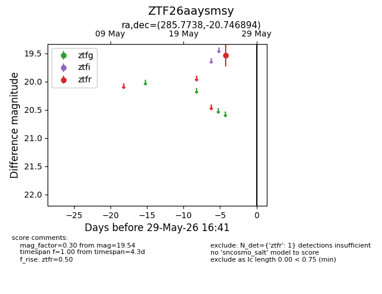
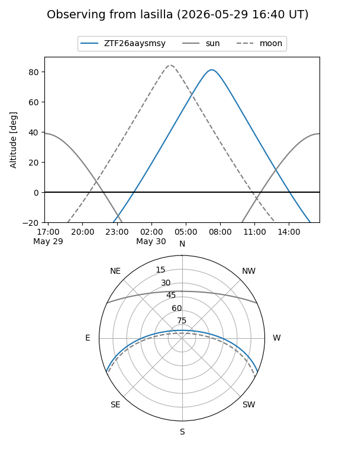
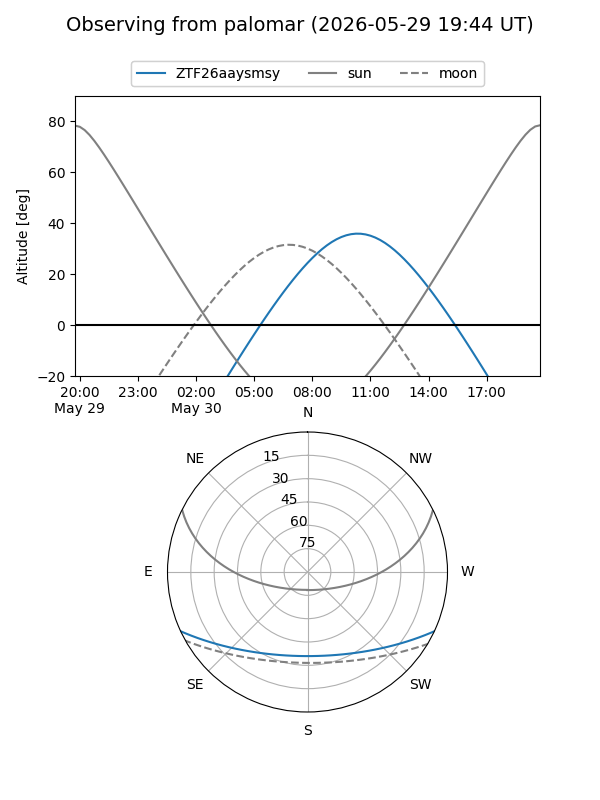

ZTF26aaysmsy
Target ZTF26aaysmsy at 2026-05-29 16:42
Aliases and brokers:
lsst-FINK: link
lsst-Lasair: link
lsst-ALeRCE: link
ztf-FINK: link
ztf-Lasair: link
ztf-ALeRCE: link
alt names
ZTF26aaysmsy (ztf,fink_ztf)
Coordinates:
equatorial (ra, dec) = 285.7738,-20.74689
equatorial (HMS+DMS) = 19:03:05.70,-20:44:48.82
galactic (l, b) = (15.4811,-11.76175)
Flags:
Photometry:
last ztfr=19.54
1 ztfr detections
Lightcurve

Visibility


Additional plots